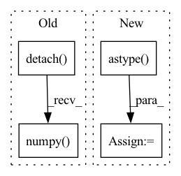

Pattern ID :37377
Before Change
y /= max_label
batch_fake_images = netG(z, y)
raw_fake_images[tmp:(tmp+batch_size)] = batch_fake_images.cpu().detach().numpy()
raw_fake_counts[tmp:(tmp+batch_size)] = y.cpu().view(-1).detach().numpy()
tmp += batch_size
//remove extra entries
raw_fake_images = raw_fake_images[0:NFAKE]After Change
//remove extra entries
fake_images = fake_images[0:NFAKE]
raw_fake_labels = raw_fake_labels[0:NFAKE]
raw_fake_labels = raw_fake_labels.astype( np.float)
//convert class labels to raw labels
raw_fake_labels = np.array([class2label[raw_fake_labels[i]] for i in range(NFAKE)])
return fake_images, raw_fake_labels
In pattern: SUPERPATTERN
Frequency: 3
Non-data size: 4
Instances Fragment ID: 107523214
Project Name: ubcdingxin/improved_ccgan
Commit Name: 8a85572c67f2b5e51be8e71eb77edbead26b2c0a
Time: 2020-03-11
Author: dingx92@gmail.com
File Name: CellCounting/Train_cDCGAN.py
M Class Name: AnonimousClass
N Class Name: AnonimousClass
M Method Name: SampcDCGAN(7)
N Method Name: SampcDCGAN(7)
M Parent Class:
N Parent Class:
M File Name: CellCounting/Train_cDCGAN.py
N File Name: CellCounting/Train_cDCGAN.py
M Start Line: 134
M End Line: 159
N Start Line: 136
N End Line: 165
Before Change
@staticmethod
def backward(ctx, grad_output):
input = ctx.saved_tensors[0]
deriv_ao = torch.tensor([ctx.mol.eval_gto("GTOval_ip_sph",p.detach().numpy() ) for p in input])
out = torch.zeros(input.shape)
for k in range(3):After Change
@staticmethod
def backward(ctx, grad_output):
input = ctx.saved_tensors[0]
pos = input.detach().numpy().astype( "float64")
deriv_ao = torch.tensor([ctx.mol.eval_gto("GTOval_ip_sph",p) for p in pos])
print("GRAD OUT\n", grad_output)
print("DERIV AO\n", deriv_ao.shape)
Fragment ID: 107523217
Project Name: nlesc-jcer/qmctorch
Commit Name: a3b2285e8153b66f9b42395f24162fd8c6c82c76
Time: 2019-05-14
Author: nicolas.gm.renaud@gmail.com
File Name: pyCHAMP/wavefunction/neural_pyscf_wf_base.py
M Class Name: AOFunction
N Class Name: AOFunction
M Method Name: backward(2)
N Method Name: backward(2)
M Parent Class: torch.autograd.Function
N Parent Class: torch.autograd.Function
M File Name: pyCHAMP/wavefunction/neural_pyscf_wf_base.py
N File Name: pyCHAMP/wavefunction/neural_pyscf_wf_base.py
M Start Line: 246
M End Line: 251
N Start Line: 302
N End Line: 311
Before Change
def forward(ctx, input, mol):
ctx.save_for_backward(input)
ctx.mol = mol
output = [mol.eval_gto("GTOval_sph",p.detach().numpy() ) for p in input]
return torch.tensor(output,requires_grad=True)
@staticmethodAfter Change
def forward(ctx, input, mol):
ctx.save_for_backward(input)
ctx.mol = mol
pos = input.detach().numpy().astype( "float64")
output = [mol.eval_gto("GTOval_sph",p) for p in pos]
return torch.tensor(output,requires_grad=True)
Fragment ID: 107523205
Project Name: nlesc-jcer/qmctorch
Commit Name: a3b2285e8153b66f9b42395f24162fd8c6c82c76
Time: 2019-05-14
Author: nicolas.gm.renaud@gmail.com
File Name: pyCHAMP/wavefunction/neural_pyscf_wf_base.py
M Class Name: AOFunction
N Class Name: AOFunction
M Method Name: forward(3)
N Method Name: forward(3)
M Parent Class: torch.autograd.Function
N Parent Class: torch.autograd.Function
M File Name: pyCHAMP/wavefunction/neural_pyscf_wf_base.py
N File Name: pyCHAMP/wavefunction/neural_pyscf_wf_base.py
M Start Line: 241
M End Line: 241
N Start Line: 296
N End Line: 297